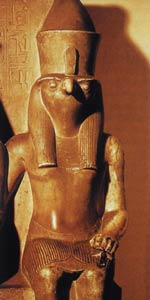

Гор або Хор, Хорус ("висота", "небо"), в єгипетській міфології бог неба і сонця у вигляді сокола, людини з головою сокола або крилатого сонця, син богині родючості Ісіди і Осіріса, бога продуктивних сил. Його символ - сонячний диск з розпростертими крилами. Спочатку бог-сокіл шанувався як хижий бог полювання, кігтями впивається в здобич.
Згідно з міфом, Ісіда зачала Гора від мертвого Осіріса, підступно вбитого грізним богом пустелі Сетом, його братом. Вийшовши в глиб болотистої дельти Нілу, Ісіда народила і виховала сина, який в силі, в суперечці з Сетом домагається визнання себе єдиним спадкоємцем Осіріса.
У битві з Сетом, вбивцею свого батька, Гор спочатку зазнає поразки - Сет вирвав у нього очей, чудове Око, проте потім Гор здолав Сета і позбавив його чоловічого начала. В знак підпорядкування він поклав Сету на голову сандалію Осіріса. Своє чудове Око Гор дав проковтнути батькові, і той ожив. Воскреслий Осіріс передав свій трон в Єгипті Гору, а сам став царем загробного світу.